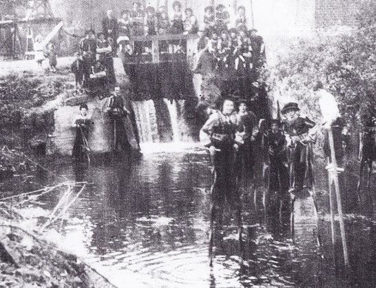

De Koninklijke Steltenlopers van Merchtem veroveren de wereld
Sommige gewoontes en gebruiken blijven doorleven in het vrije tijdsleven van een bepaalde streek. Zo ontstaat een vorm van folklore, die de latere generaties op een boeiende manier laat kennis maken met het verleden. Steltenlopen gebeurde vroeger uit pure noodzaak, maar is thans een plezante vorm van ontspanning. Niet alleen in Europa, maar ook elders begonnen de mensen op stelten te lopen. In China, Japan en Polynesië behoorde het steltenlopen tot de volkscultuur. In Amerika is de sandwichman een begrip. Al deze vormen van steltenlopen kennen een gevarieerde geschiedenis.
Zo moeten wij ook teruggaan naar vroegere tijden voor de betekenis van het steltenlopen in Brabant. Binnen deze eeuwenoude traditie ontstond de ondertussen wereldvermaarde folkloristische vereniging “De Steltenlopers van Merchtem”, een vereniging die door de jaren heen faam en een palmares op wereldniveau verwierf.
Vroeger gebruikten de mensen stelten voor het doorwaden van rivieren of om bij overstromingen droog aan de overkant van het water te komen. Vermoedelijk werden stelten zowat overal in de wereld gebruikt tot het ontstaan van modernere hulpmiddelen. Getuigen uit het verleden zijn de steltenlopers van Namen aan de Maasoever. Sinds de achttiende eeuw zijn steltenlopers in de moerasgebieden van de Landes in Zuid-Frankrijk gesignaleerd. Anderzijds werden stelten gebruikt om werken uit te voeren die moeilijk bereikbaar waren voor de menselijke gestalte. In de bouwkunst kent men het gebruik van stelten bij de stukadoors. In het Zuid-Engelse graafschap Kent stonden de hoptelers op stelten om de draden aan de hoge staken te binden. Schaapherders gebruikten in verscheidene landen stelten om zich tussen de dieren van de kudde te verplaatsen. Zo behielden zij immers een beter overzicht.
Het steltenlopen als onderdeel van een beroepsactiviteit verdwijnt bij het gebruik van moderne hulpmiddelen, maar blijft evenwel bestaan als een kinderspel en een volkssport. In het folkloreleven treedt de steltenloper door de eeuwen heen naar voor in volksoptochten en in het circusleven. Het verlangen van de mensen om groter te zijn dan de anderen, om reus te zijn, manifesteert zich op deze manier. We zien dit verschijnsel bij vele volkeren o.a. de sandwichman in Amerika, tovenaars bij de Bantoevolken, de eerste reuzen in de Vlaamse cavalcades… Steltenlopen te Merchtem en in Brabant door de eeuwen heen
In Brabant kent het steltenlopen eveneens een heel oude traditie. Archiefdocumenten maken duidelijk dat het steltenlopen in onze streek al bekend is in het jaar 1336. Bij het begin van de zestiende eeuw beeldde de miniaturist Simon Bening (°1483/1484) een viertal steltenlopers af. Deze miniatuur, die een steltengevecht weergeeft, bevindt zich in het getijdenboek (1505) van Filips de Schone (bewaard te Valencia). De Brabantse schilder Pieter Breughel de Oude geeft twee steltenlopers weer op zijn gekende schilderij Kinderspelen (1560). Dit beroemde doek, dat thans te Wenen hangt, beeldt 81 verschillende volkspelen uit. Onze steltenlopers dragen nog steeds de kledij uit die tijd, weliswaar in de Belgische driekleur.
De Molenbeek, een brede doch ondiepe beek, die zich in noordelijke richting door onze gemeente slingert en ongeveer zestien kilometer verder te Ruisbroek in het kanaal van Willebroek uitmondt, stroomt eveneens door Langevelde, een gehucht van Merchtem. Het gebeurde vaak dat de Molenbeek buiten haar oevers trad en het gebied overstroomde. De bewoners van Langevelde zagen zich dan afgesloten van de dorpskern. Om dit euvel te overbruggen zochten de inwoners hun heil in de stelten. Zij gebruikten de stelten om de moerassige plaatsen op deze wijze droog over te steken. Bij strenge vorst of sneeuw haalden zij skivormige glijplanken om over de bevroren ondergrond te glijden. Als schoeisel gebruikten zij blokken. Dit verklaart de aanwezigheid van blokkenlopers bij de Koninklijke Steltenlopers.
De stichting van de steltenlopers van Merchtem
Tijdens de Tweede Wereldoorlog waren de mogelijkheden om zich te ontspannen in bezet België beperkt. De mensen begonnen opnieuw op plaatselijk niveau ontspanning en vermaak te organiseren en grepen terug naar de oude spelen. De jeugd van Langevelde begon op stelten te lopen en de volwassenen volgden vanaf 1942. Zij vervaardigden stelten uit es en wilgenhout. Zij bereikten een hoogte van één tot drie meter. Er ontstond een gezonde wedijver om hoger en hoger te lopen. Zuiver voor de sport begonnen de steltenlopers van Langevelde schijngevechten te houden.
Op 10 juni 1945 trok door Merchtem een Bevrijdingsstoet. Elke wijk of gehucht nam hieraan deel. In plaats van een praalwagen te bouwen, zoals de meeste straten en gehuchten, vaardigden de bewoners van Langevelde 25 steltenlopers af. Deze sierlijk geklede steltenlopers behoorden tot vijf verschillende families, te weten Van Hoeymissen, Van Den Broek, Cooremans, Walravens en Meysman. De verrassing onder de toeschouwers was algemeen en de steltenlopers oogstten een uitbundig succes.
Enkele dagen na de bevrijdingsstoet werd de Folkloristische Vereniging Steltenlopers van Merchtem gesticht. De bezieler en eerste voorzitter Jan Vanderhasselt (°Merchtem, 11/09/1907 - †Ekeren, 01/06/1979) en zijn eerste echtgenote Jeannette Van Der Slagmolen (°Asse, 28/11/1911 - †Merchtem, 07/11/1968), Florent, Jules en Victorine Van Hoeymissen bouwden onze vereniging uit.
Na het geslaagde optreden in de Merchtemse Bevrijdingsstoet werd de groep veertien dagen later al voor het eerst uitgenodigd, namelijk voor een Vredesstoet te Wemmel. In februari 1946 volgde reeds een optreden in de carnavalstoet van Aalst waar onze Merchtemse steltenlopers als laureaten werden gehuldigd. De toekomst was verzekerd en de uitnodigingen stroomden binnen.